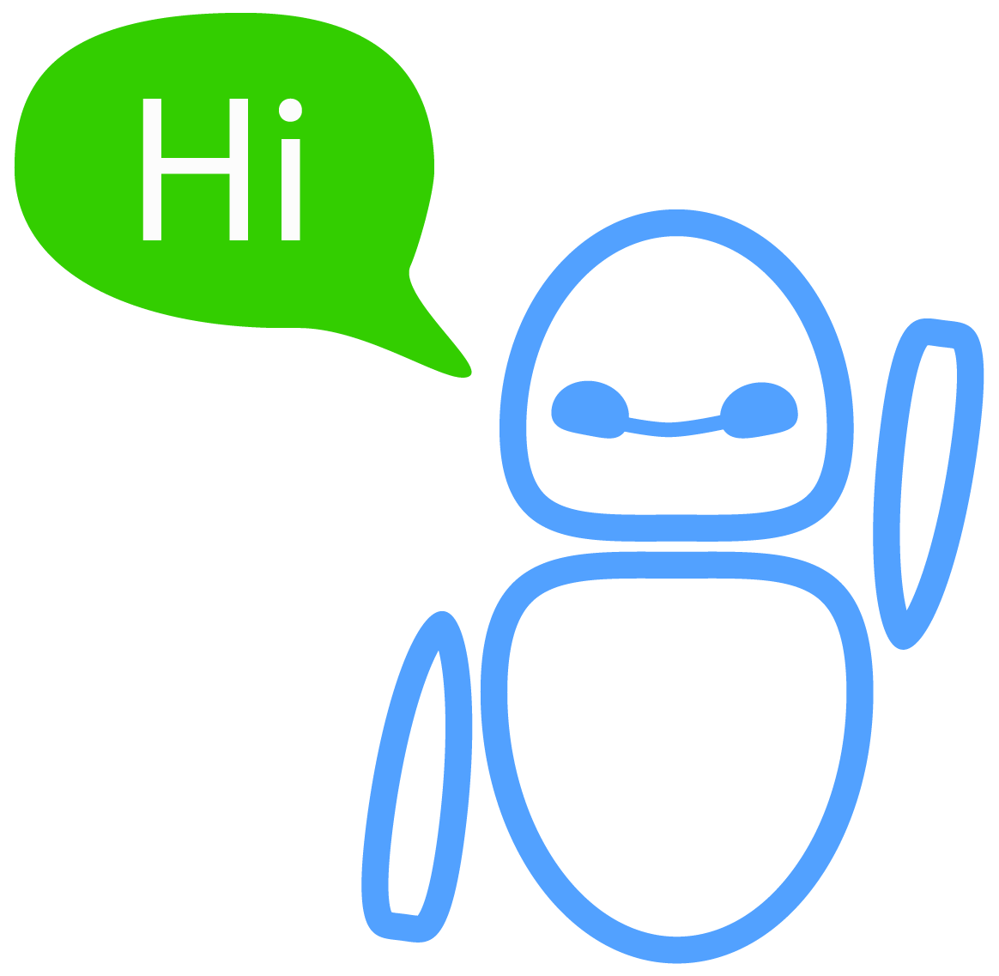

Small Bot
Главная
Конструктор
Контакты
Войти
Создайте своего чат-бота уже сейчас!
попробуйте, это бесплатно.
Начать

Что такое чат-бот?
Чат-бот это программа которая без вмешательства человека помогает пользователям получать ответ на их вопросы.
Упростите процесс создания рассылок
Создайте рассылку сообщений пользователям по определенным критериям в несколько кликов.
Поддерживайте своих пользователей
Сообщайте необходимую пользователю информацию в любое время суток, без вмешательства службы поддержки.
Ничего лишнего
Создавайте чат бота под свои задачи. Используя шаблоны вы добьетесь максимального эффекта затратив минимум времени.